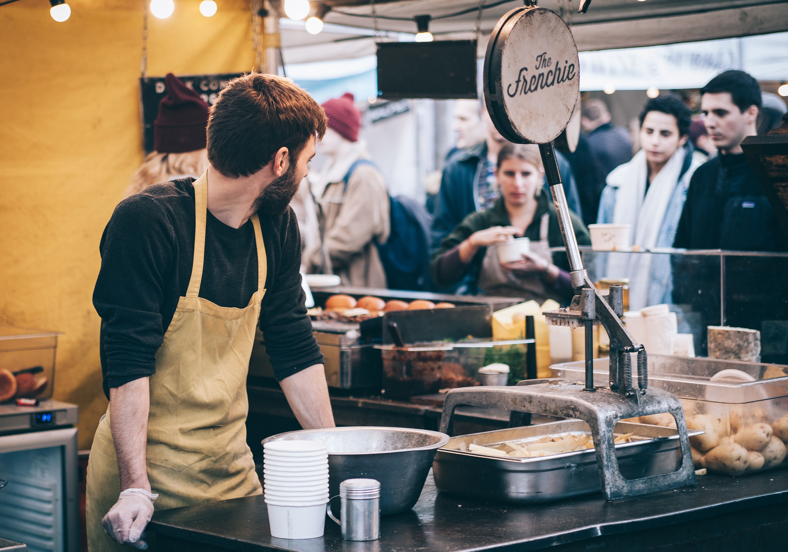

Who We Are

{kind=link}
Park St. Produce was founded in 2010 and is a charitable non-profit and inclusive organization located in the Boston area. Our team includes around 15 local Boston citizens and we are always open to expanding our team. With more team members, we can make our market as entertaining and fulfilling as we can for our local consumers!
Mission

We aim is to improve the health of individuals, particularly college aged students, in the Boston community by serving nutritious and delicious foods from a variety of different venders. Our market creates a special bond between the state's consumers and producers. The vendors at our farmers market get exposure to many consumers in order to expand their individual businesses. Also, through hosting many other events at the market - such as live music, poetry, art, stores, and games - we take pride in our ability to create an entertaining space for our consumers.
Partners

We partner with farmers, consumers, and communities. We are especially excited to announce our partnership with the Massachusets Department of Agricultural Resources that helps fund our market. We would not be able to accomplish, and continue to accomplish, the breathtaking and friendly experience we create at our market without our partners.